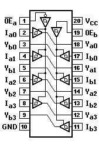
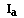

H = HIGH voltage level steady state.
h = HIGH voltage level one setup time prior to the LOW-to-HIGH clock transition.
L = LOW voltage level steady state.
l = LOW voltage level one setup time prior to the LOW-to-HIGH clock transition. = LOW-to-HIGH clock transition.
X = don't care.
74LS24174F241
OCTAL BUFFER, TRI-STATE
PIN ASSIGNMENT

LOGIC DIAGRAM
TRUTH TABLE
INPUTS
OUTPUTS

Ya
Yb
L L H
L H X
H H L
L H X
L H (Z)
L H (Z)
H = HIGH voltage level
L = LOW voltage level
X = Don't care
(Z) = HIGH impedance (off) state
74LS266
QUAD 2-INPUT EXCLUSIVE NOR GATE (OPEN COLLECTOR)
PIN ASSIGNMENT
LOGIC DIAGRAM
TRUTH TABLE
INPUTS
OUTPUT
A
B
Y
L L H H
L H L H
H L L H
H = HIGH voltage level
L = LOW voltage level
This page has been created by
Frank Kontros.
Last updated May 21th, 1998.
![[Prev]](../../../../images/blue_prev.gif)
![[Next]](../../../../images/blue_next.gif)
![[Contents]](../../../../images/blue_toc.gif)
![[Commodore]](../../../../images/blue_cbm.gif)
![[New]](../../../../images/blue_new.gif)
![[Home]](../../../../images/blue_home.gif)